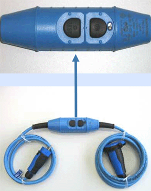

Der PRCD-S ist eine ortsveränderliche Differenzstromschutzeinrichtung mit elektronischer Fehlerstromauswertung (PRCD-S = Portable Residual Current Device - Safety). Er eignet sich vor allem als Schutzverteiler für kleine Baustellen sowie für alle ortsveränderlichen Elektrogeräte.
Ein PRCD-S verfügt über
WICHTIG: Einen PRCD-S immer mit bloßer Hand einschalten, damit die Schutzfunktion wirkt!
Ein PRCD-S erkennt Fremdspannung auf dem Schutzleiter. Er prüft zunächst die Funktion des Schutzleiters. Dieser muss ordnungsgemäß angeschlossen sein. Erst nach einer positiven Prüfung lassen sich der PRCD-S und das angeschlossene Betriebsmittel einschalten.
Schutzumfang bei Fehlern in angeschlossenen Elektrogeräten:
- auftretende Fehlerströme bei defekten Verbrauchern führen zu einer allpoligen Abschaltung
Schutzumfang bei Fehler in der Festinstallation:
- der PRCD-S erkennt alle Fehler in Festinstallationen und lässt sich im Fehlerfall nicht einschalten
- die intakten Schutzleiterfunktionen werden vor dem Einschalten überprüft und während des Betriebes überwacht
- eine Unterspannungsauslösung verhindert das selbständige Wiedereinschalten nach Spannungswiederkehr